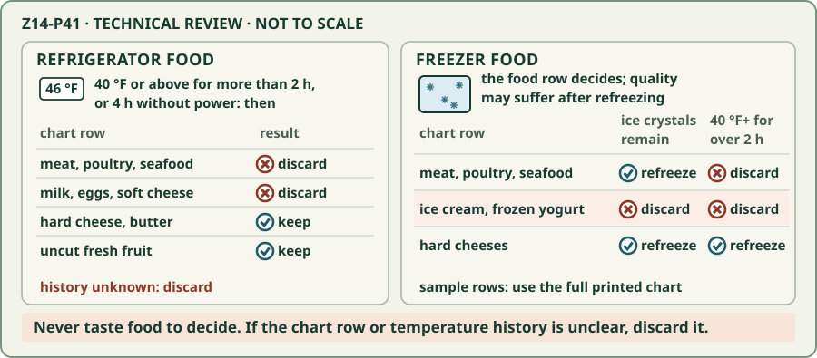

Z14-P41 · Food production and preservation · New manuscript
Apply official per-item keep, refreeze, or discard charts after outage warming
Save safe food categories accurately while discarding high-risk spoiled perishables cleanly when power returns.
When it applies · Evaluating refrigerated and frozen household food stocks after power restoration or appliance breakdown.
Equipment · Printed offline copy of the official FoodSafety.gov Power Outage Chart and appliance thermometers.

Actions
- For refrigerated foods held above 40°F for OVER 2 hours: DISCARD meat, poultry, fish, eggs, soft cheeses, milk, cut melons/tomatoes/leafy greens, cooked pasta/rice/leftovers, and opened mayo/creamy dressings; items like hard cheeses, uncut whole produce, butter, peanut butter, jams, and vinegar condiments are generally listed as keepable per the official chart.[F04, P17]
- For frozen foods: you may safely refreeze or cook foods that STILL contain visible ice crystals OR measure 40°F or below on a food/appliance thermometer (expecting minor texture/quality softening); discard thawed meat/poultry/seafood/egg/dairy dishes held above 40°F over 2 hours.[F05, P17]
- Log every keep/discard decision objectively using thermometer readings and printed chart rows—NEVER rely on appearance or smell alone.[F04, F05]
Failure recognition · Refreezing completely thawed 52°F chicken breasts and soft cream cheese after a 3-day summer blackout because they "still smell okay."[F04, F05]
Verify · Confirm printed FoodSafety.gov chart applied per food category alongside measured temperature and ice-crystal checks.[F04, F05]
Stop or change course · When temperature history is unknown or exceeds 40°F for >2 hours on high-risk perishables, discard cleanly ("When in doubt, throw it out").[F04, P17]
Evidence and editorial notes
- F04 · USDA / FDA / CDC · Food Safety During Power Outage (current web edition)
- Section: Refrigerated food and power outages · Conditions: Refrigerator starts cold; keep door closed
Support: An unopened refrigerator keeps food cold for about four hours. Follow the per-item discard chart after loss of temperature control. Never taste to test.
Limitations: Door openings accelerate warming; appliance thermometer is needed to verify temperature. · Conflicting evidence: None; retained for Z15 reconstruction.
Editorial note: Maintains five-pack integrity. · Specialist reviewer: Food safety and household preparedness
Primary source · checked 2026-11-24 - F05 · USDA / FDA / CDC · Food Safety During Power Outage (current web edition)
- Section: Frozen food and power outages · Conditions: Freezer door closed; typical household unit
Support: A full freezer holds temperature about 48 hours, a half-full freezer about 24. Use ice crystals or measured 40°F or below to evaluate refreezing where the chart permits.
Limitations: Varies by freezer insulation, ambient room temperature, and door seals. · Conflicting evidence: None; retained for Z15 reconstruction.
Editorial note: Maintains five-pack integrity. · Specialist reviewer: Food safety and household preparedness
Primary source · checked 2026-11-24 - P17 · USDA / FDA / CDC · Food Safety During Power Outage (current web edition)
- Section: Refrigeration Loss, Insulated Coolers, and Discard Boundaries · Conditions: Power outages or appliance failures affecting home food stocks
Support: Use appliance thermometers in both fridge (≤40°F) and freezer (≤0°F), group frozen foods tightly, avoid opening doors unnecessarily, use block/dry ice with ventilation precautions only when available, and discard perishable items held above 40°F over two hours.
Limitations: Dry ice sublimates into carbon dioxide gas and causes severe frostbite on bare skin; handle with gloves and ventilate spaces. · Conflicting evidence: None; integrates Z14 cold-chain protection with Z15-R03.
Editorial note: Links food preservation stocks to outage triage and safe discard gates. · Specialist reviewer: Food safety and emergency management
Primary source · checked 2026-11-24
Source lineage · USDA/FDA/CDC FoodSafety.gov; new manuscript · Classification · New manuscript.